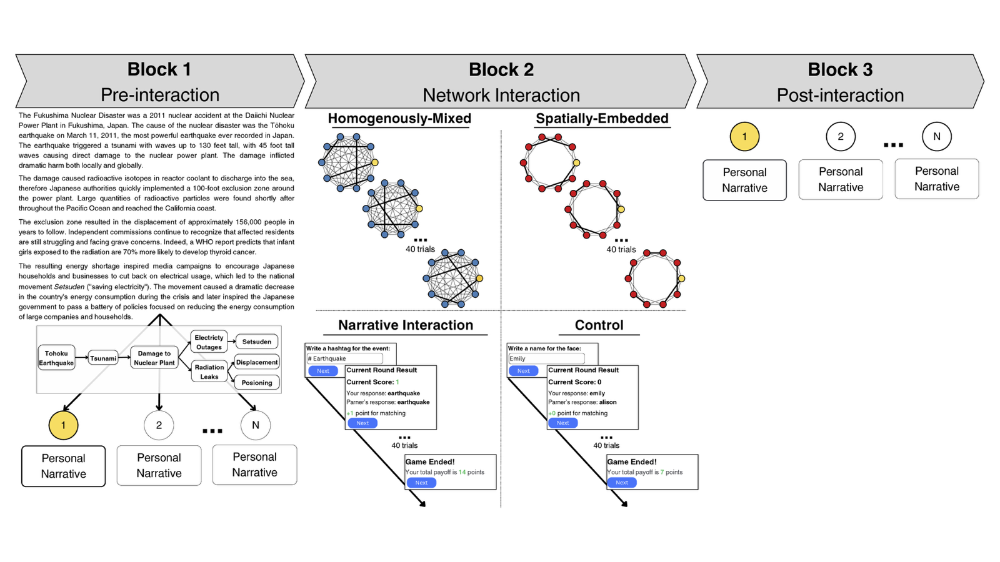
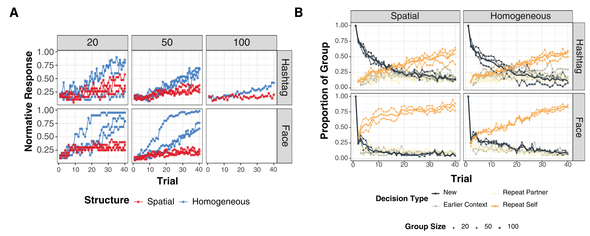
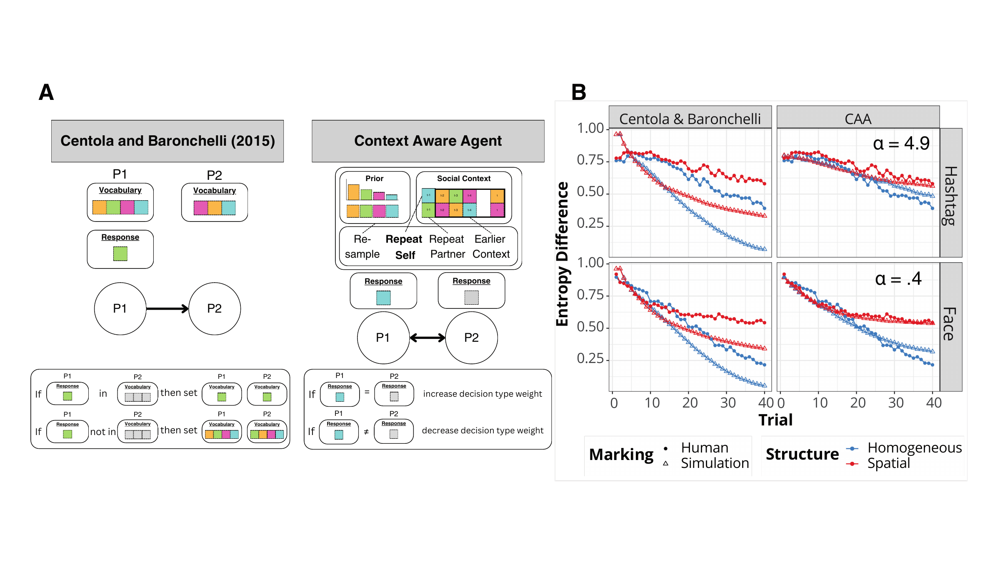
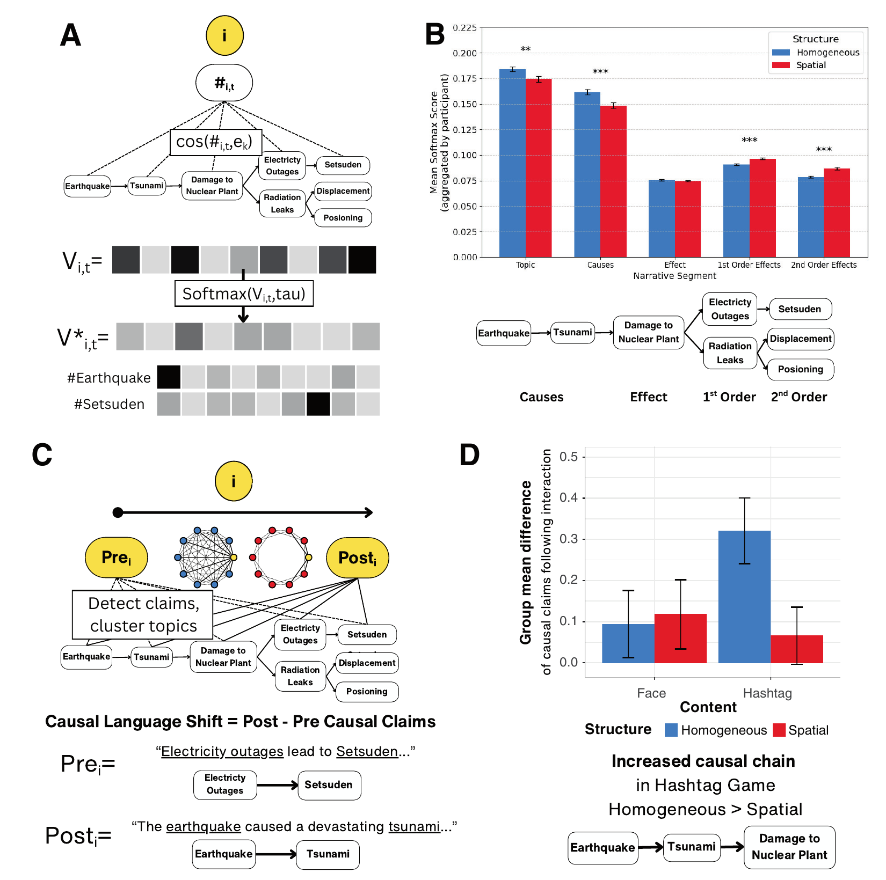

Network Structure Shapes Consensus Dynamics Through Individual Decisions
PNAS · 2026
Priniski, J. H., Linford, B., Hirschmann, A., Venumuddala, S. K., Morstatter, F., Rodriguez, N., Brantingham, P. J., & Lu, H. (2026). Network structure shapes consensus dynamics through individual decisions. Proceedings of the National Academy of Sciences, 123(2), e2520483123.
How do shared narratives emerge in decentralized online networks?
I developed a controlled network framework and experimental task termed the Hashtag Game, where participants read a text narrative (the focal narrative) describing a causally complex event and are financially incentivized to write matching hashtags about the event with network neighbors during a group communication phase.
Findings reveal that media content with inherent causal structure encourages individuals to explore their prior knowledge for a longer period of time during networked interaction rather than quickly mirroring neighbors’ responses in social context, which attenuates the effect of fully connected network structures on the adoption of shared beliefs. An embedding-based narrative alignment measure shows that fully connected groups orient their interactions more toward communicating causes of an event, whereas locally connected networks emphasize the event’s effects. Participants in fully connected hashtag networks showed the largest increase in causal language, with most added claims focusing on causes of the disaster.
The Hashtag Game
Hashtag coordination extends simplified coordination tasks (e.g., the Name Game: coordinate a name for a face image; Centola and Baronchelli, 2015) because effective hashtags must encode both causal content about a scenario and language content that aligns with neighbors' language.
I analyzed how a group's network structure (fully connected versus locally connected) interacts with individual decision-making (exploring background knowledge versus exploiting environmental regularities) in both the Hashtag Game and the Name Game.

Group Consensus Depends on Individual Decision Strategies

Longer exploration of background knowledge in the Hashtag Game slows group consensus
We examined the proportion of a group providing the dominant or normative response on each trial as a measure of group-level response convergence. While groups adopted shared hashtags, they did so more slowly than in the face-naming condition (blue lines, top versus bottom rows in Figure 2A).
Homogeneously mixed (fully connected) networks reached consensus faster than spatially embedded (locally connected) networks for both hashtag-matching and face-naming, but there was less of a divergence in shared responses across network structures in the hashtag-matching condition.
Participants could explore the response space by sampling a “new” response that neither they nor a partner had previously produced. They could copy their partner’s last response or repeat their own previous response (“repeat partner” and “repeat self,” respectively). They could also resample a response remembered from earlier interactions (“earlier context”), whether they had generated it themselves or received it from a partner.
Hashtag-matching groups sampled new responses (black lines) for longer, while face-naming groups adopted a self-consistent strategy (orange lines) more quickly (Figure 2B).
Simulating Consensus Dynamics with Context Aware Agents
To model how network structure and decision strategies jointly influence the onset of consensus, we developed a network model of Context Aware Agents (CAA) to simulate the real-time updating of individuals’ decision strategies for integrating their prior knowledge with information gathered from social context during network interactions over the course of the experiment.
Background knowledge about media content becomes progressively less important and reliance on social context increases as the number of trials increases.

The comparison model from Centola and Baronchelli (2015), which does not consider prior knowledge, consistently overestimates the rate of entropy decrease and predicts the same dynamics for both forms of interaction media.
These results stem from the lack of exploration of background knowledge in this model; it only takes advantage of an agent’s social context and is a greedier social learning algorithm than the CAA model. The CAA model provides a better fit in all four experimental conditions.
Simulations from the CAA model corroborate experimental results demonstrating that, when agents explore prior knowledge for longer, consensus is more difficult to achieve in fully connected networks.
We observed that network structures did not appear to affect the dynamics of the decision strategies employed by individuals in the Hashtag Game. However, these structures could play a role in shaping the content communicated within networked interactions.
Measuring Narrative Alignment
I developed natural language processing (NLP) measures to analyze narrative alignment in hashtag responses during communication and in personal narratives written before and after networked interaction. We developed an embedding-based narrative alignment measure that maps hashtags to subcomponents of the narrative’s text, finding that more complete mixing of interactions in fully connected networks orients individual responses toward the causes of the event, while networks with separated neighborhoods reward more divergent local frames with responses clustered around various effects of the event. We also applied a causal language NLP measure to participants’ tweet-like statements to assess how networked interactions influenced the content of personal narratives, finding that participants in fully connected hashtag-matching networks most significantly increased their use of causal language surrounding the disaster’s causes.

Network structure shapes the causal content of both hashtag responses and personal narratives
The narrative alignment measure maps a hashtag’s semantic content to the key causal events in the focal narrative by computing the cosine similarity between the hashtags and text encoding each causal event. These values are normalized to produce a V* vector with values summing to 1.
Fully connected groups oriented communication toward the causes of the disaster, while locally connected groups emphasized its effects (Figure 3B).
Before and after network interaction, participants wrote tweet-like personal narratives about the Fukushima nuclear disaster. The causal language pipeline (Priniski et al., 2023) extracts cause-and-effect relationships from these narratives and clusters them by the semantic topics of their entities.
Participants in fully connected hashtag networks showed the largest increase in causal language, with most added claims focusing on causes of the disaster (Figure 3D).